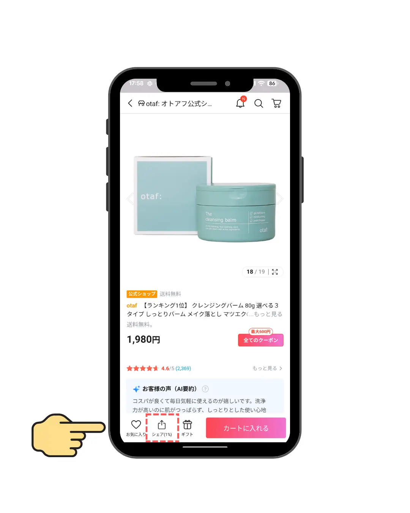
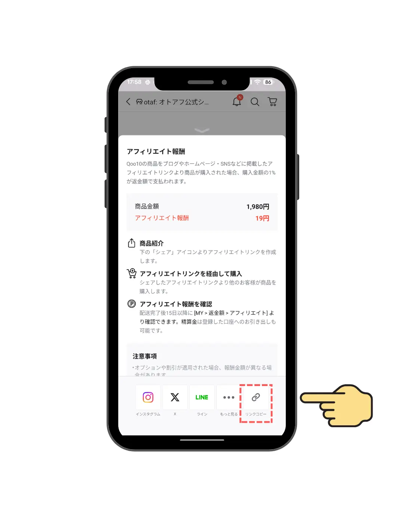
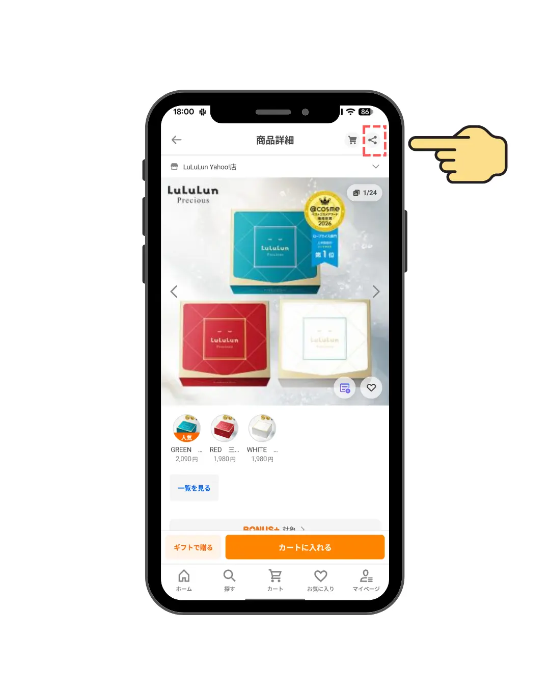
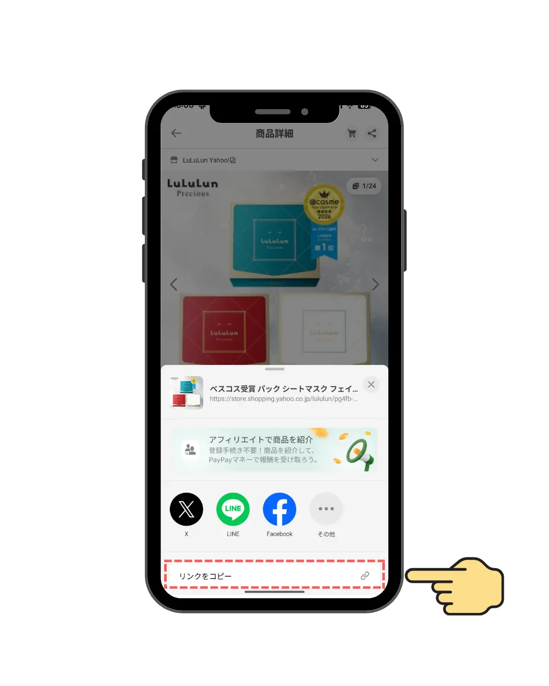

購入商品の
URLコピペ方法例
トリイクをご利用いただきありがとうございます！
アンケートに入力する商品URLのコピー手順を解説します。
スマートフォンからでも、2ステップで簡単にコピーして貼り付けることができます。
Qoo10 商品URLのコピー方法
STEP 01
「シェア」ボタンを押す
購入した商品のページを開き、画面下部にある赤い破線枠の「シェア」アイコンを押します。

STEP 02
「リンクコピー」を押す
メニューが表示されたら、右下にある赤い破線枠の「リンクコピー」ボタンを押します。これでコピーは完了です！アンケート画面の入力欄に貼り付けてください。

Yahoo!ショッピング 商品URLのコピー方法
STEP 01
画面右上にある「シェア」ボタンを押す
商品詳細ページを開き、画面右上にある赤い破線枠の「シェア」アイコンを押します。

STEP 02
「リンクをコピー」を押す
画面下部にメニューが表示されたら、一番下にある赤い破線枠の「リンクをコピー」ボタンを押します。これでコピーは完了です！アンケート画面の入力欄に貼り付けてください。

コピーしたURLを貼り付けてアンケートに回答に進んでください。